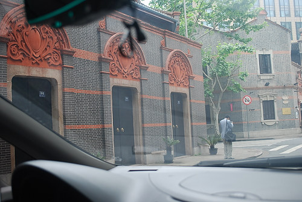

|

Shikumen is an urban housing typology that developed and flourished in Shanghai China from around 1850 to 1950. Sometimes refered to as a Lilong development, the Shikumen is a uniquely Shanghai typology that formed during a period of rapid urbanization and increased westernization, resulting in a hybrid of the British row house with the Chinese traditional courtyard house. The perimeter of the block is usually converted for small-scale commercial uses. The developments are efficient and rationally ordered, making good use of scarce land, while still maintaining a sense of community and privacy. |